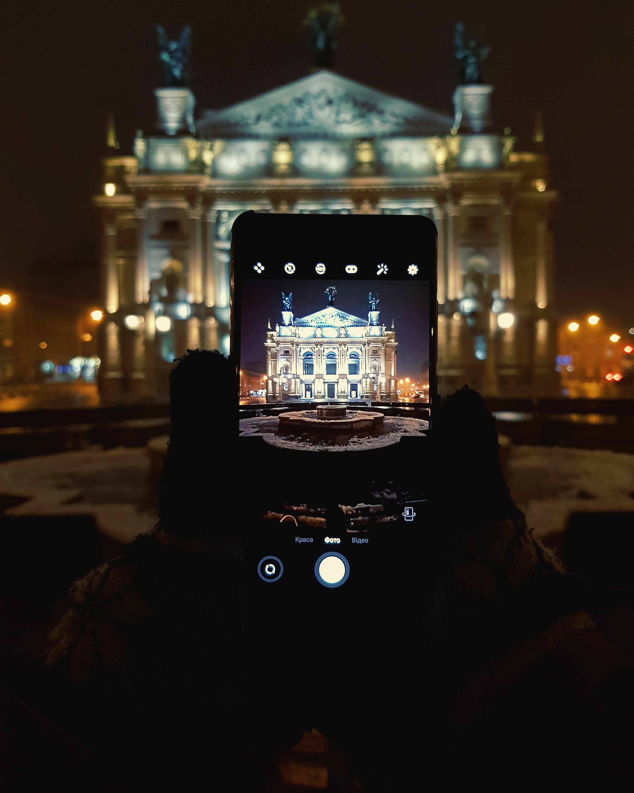

Це була наша пепрша поїздка. Не все виходило гладко, але все ж ми насолоджувались кожною миттю, принаймні я.
Починалось все з нічного потягу до Львова , де ми гуляли декілька годин. Було холодно, але краса безлюдного Лбвова зачаровувала, ми наче перенеслись назад у часі.
